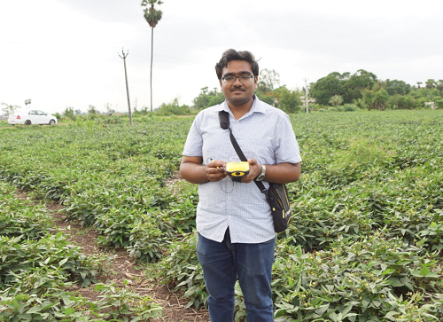
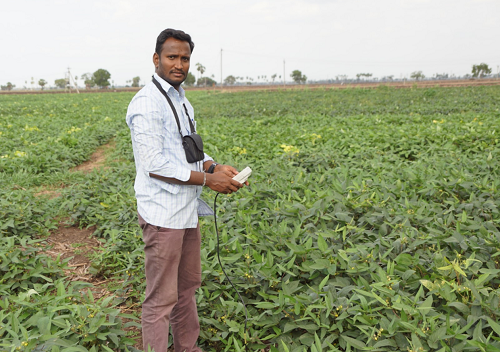
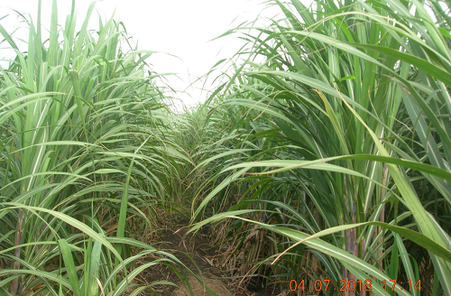
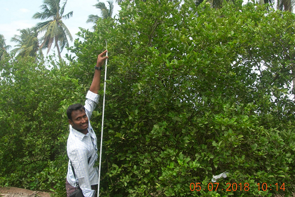
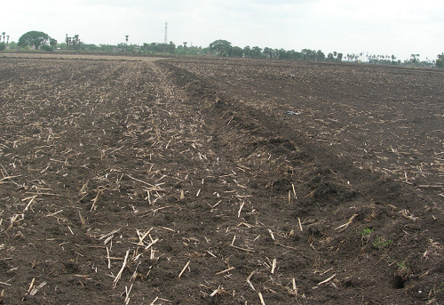

Resources
Access In-situ & EO Data
Blog Post:
[19 Dec 2018]
Cyclone Phethai: Andhra Pradesh on high alert;Heavy rainfall during the campaign. JECAM RS-2 acquisition CANCELLED
Cyclone Phethai damaged crops in both Godavari delta and Krishna delta. Rice in 5,857 ha. suffered damage and majority of it was in Krishna district. Agriculture department officials confirmed no crop damage either in East Godavari district or in Guntur district. [26 Nov 2018]Sampling locations (SITE_ID) are shared with JECAM SAR Inter-Comparison Experiment lead.
[10 Dec 2018]RS-2 satellite data download+quality check+preprocessing is over. Passed.
[01 June 2018]Field campaign 01 | Date: 09-06-2018 to 10-06-2018
Field crew: Mr. Dipankar Mandal (Research Scholar, IITBombay); Dr. G. G. Ponnurangam (APSAC); Mr. Appala Naidu (APSAC); Mr. Lakshmi Prasad Rao Maddu (APSAC); Mr. Subhadip Dey (IITBombay)
Lab-segment team: Mr. Vineet Kumar (Research Scholar, IITBombay); Dr. Avik Bhattacharya & Dr. Y. S. Rao (CSRE, IITBombay); Dr. Ramana V Kothapalli (APSAC)
Test Site Images
Black gram field (Dipankar).
Soil moisture measurement in black gram field (Dr. Ponnurangam).
Sugarcane field.
Plant height measurement in a Lemon orchad (Dr. Ponnurangam).
Bare soil field (ploughed field with corn residue).